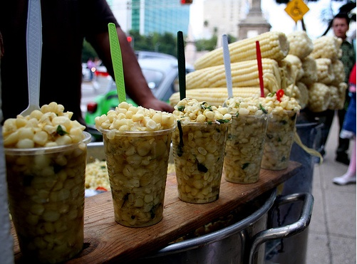

Esquites (Mexican Elotes Salad)

Recipe written by CJ at allrecipes
Description
Elote, made from grilled corn on the cob and slathered in deliciousness, is a popular street food that shows up at the local fair every year. Esquites are an off-the-cob version that makes a refreshing salad on a hot summer day. Top with more Cotija cheese and a dusting of Tajin.
Ingredients
- 1 tablespoon olive oil
- 4 ears corn, kernels cut from cob
- salt and ground black pepper to taste
- 1 small shallot, minced
- 1 tablespoon mayonnaise, or more to taste
- 1 teaspoon chile-lime seasoning (such as Tajin), or more to taste
- 1 jalapeno pepper, seeded and minced
- ½ cup fresh cilantro, chopped
- 2 ounces Cotija cheese, crumbled
- 1 lime, cut into wedges
Steps
-
Heat oil in a large cast iron skillet over high heat until shimmering. Add corn kernels, in batches if necessary. Stir briefly; sprinkle lightly with salt and pepper. Cook, without stirring, until corn is slightly charred, about 2 minutes. Stir once and cook for 1 minute more. Remove from heat and set aside.
-
Mix shallot, mayonnaise, and chile-lime seasoning together in a large bowl. Stir in the corn and jalapeno until well coated in dressing. Stir in 1/2 of the cilantro and Cotija cheese. Taste and season as desired. Top with the remaining cilantro. Serve each portion with a lime wedge.
Home